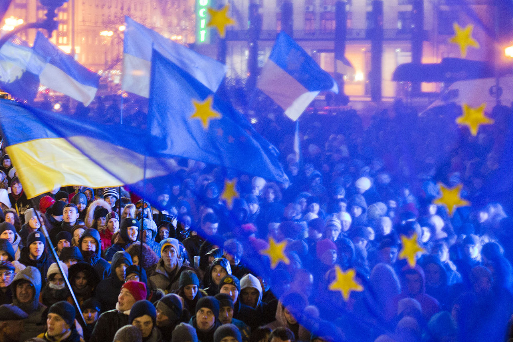
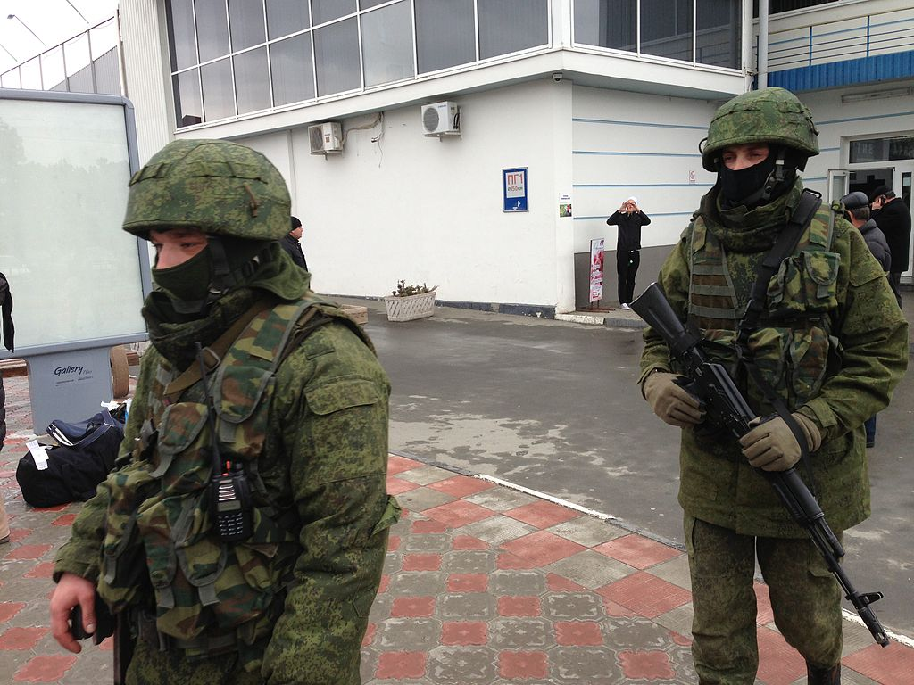
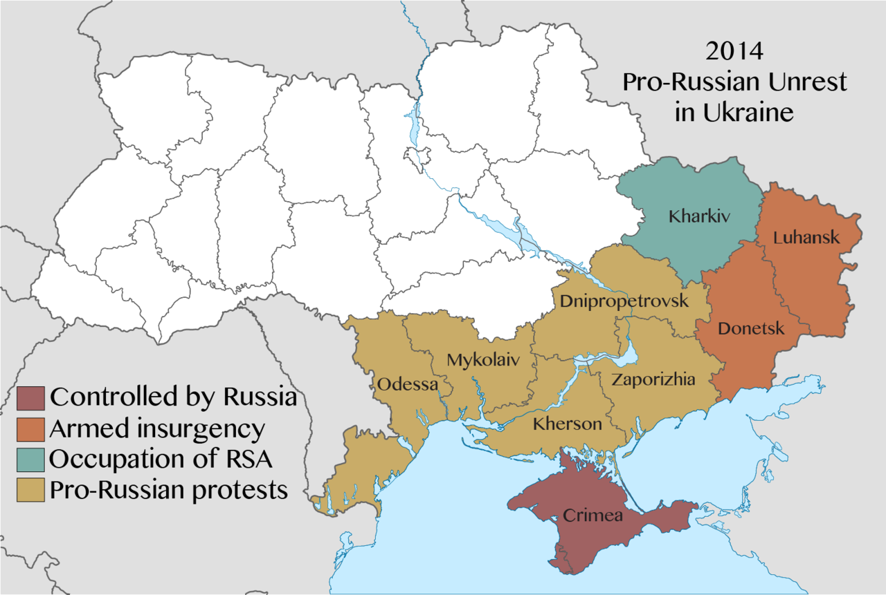
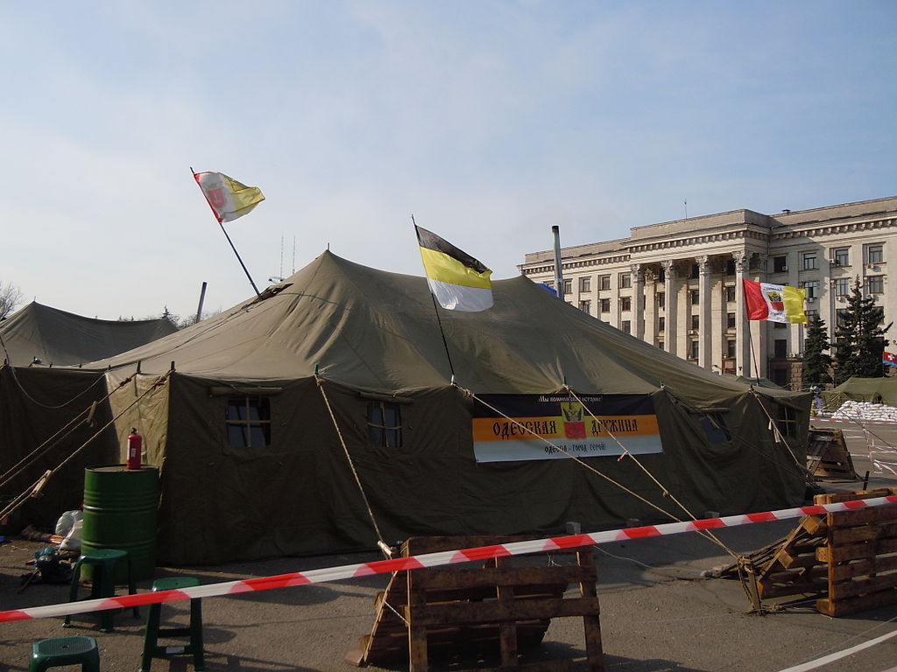
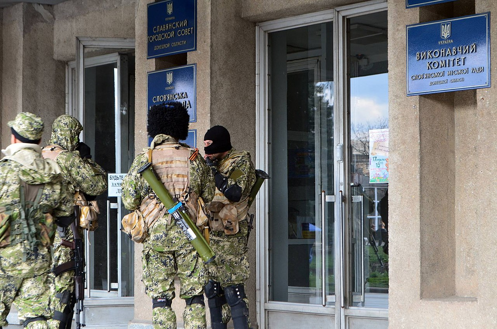
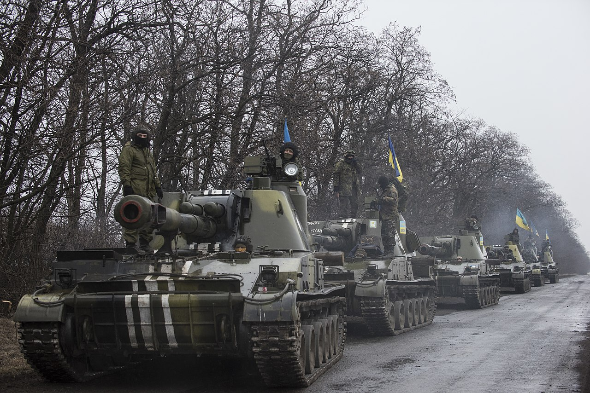
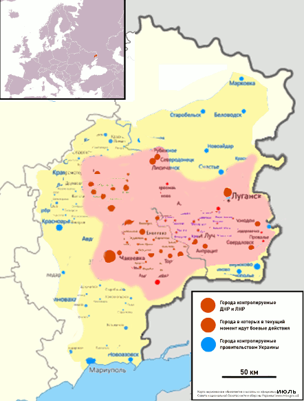

Prerequisites
Global prerequisites and causes of confrontation
Основними передумовами виникнення протистояння Росії й України, яке переросло у збройну агресію Росії проти України, є системна криза російської державності, яка трансформується російським політикумом у намагання відновити російську імперію, розширити контроль над частиною світу й утримати за собою світову гегемонію, втрачену з розпадом СРСР та економічним занепадом.
Олександр Дугін у своїй книзі Основи геополітики: Геополітичне майбутнє Росії 1997 року, яка мала значний вплив на російську військову, поліцейську та зовнішньополітичну еліту, стверджував, що Україна повинна бути анексована Російською Федерацією, тому що нібито «Україна як держава не має геополітичного значення, особливого культурного імпорту чи загальнолюдського значення, географічної унікальности, етнічної винятковости, її певні територіальні амбіції становлять величезну небезпеку для всієї Євразії і без вирішення проблеми „українського питання“ говорити про континентальну політику взагалі безглуздо. Не можна дозволити Україні залишатися незалежною, якщо вона не буде санітарним кордоном, що було б теж неприпустимо». Книга мала колосальний вплив на зовнішню політику Владіміра Путіна, що врешті призвело до російсько-української війни.
Revolution of Dignity
21 листопада 2013 року в Україні розпочалися антиурядові протести як реакція на рішення Кабінету Міністрів України про призупинення процесу підготування до підписання Угоди про асоціацію між Україною та Євросоюзом і значно поширилися після силового розгону демонстрації в Києві вночі 30 листопада. У рамках протестів кінця 2013 року відбувалися, зокрема, мітинги, демонстрації, студентські страйки.
Загалом ці протести були спрямовані на збереження законодавчо закріпленого геополітичного курсу України на Європу, що означав для Росії не лише подальший вихід України з-під контролю Росії, а й отримання Україною економічних, політичних, а в перспективі і військових гарантій збереження цього курсу.
Наслідком перемоги Революції стало відсторонення президента Януковича від влади та його втеча в Росію, відновлення конституції України 2004 року, скасування диктаторських законів, призначення дострокових президентських виборів. Зміна влади кардинально зменшила силу впливу Росії на Україну.
Революція гідності була приводом, який використала Росія для початку агресії, але ніяк не причиною війни. Є навіть версії, що російські спецслужби цілеспрямовано працювали на радикалізацію протестів з метою руйнування української державності загалом і таки скористались моментом тимчасової відсутності Президента, інших вищих посадових осіб, зокрема силових органів, для захоплення Криму.
Preparation of russia for aggression and components of aggression
Infowar
Ключовою передумовою конфлікту стала дедалі більш неприязна політика путіністської Російської Федерації щодо України. Ця політика, з огляду на зміст російської пропаганди у ЗМІ, за останні роки стала просто ворожою, трансформувавшись від антиукраїнської пропаганди до пропаганди війни. Агресивність російської політики стосовно України вилилася у перші жертви з української сторони ще за часів режиму підконтрольного Росії В. Януковича[7]. Для протидії впливу російської пропаганди Державний комітет телебачення і радіомовлення України з літа 2014 року розпочав боротьбу з матеріалами сепаратистського й антидержавного характеру в ЗМІ.
Legal war
Одним з аспектів підготовки Росії до агресії стало правове протистояння Росії і України. Правове та юридичне забезпечення протистояння з боку Росії здійснювалось на вищому законодавчому рівні шляхом прийняття тих чи інших постанов з питань, які дозволяли найбільш ефективно, з точки зору російського політикуму, сприяти вирішенню завдань повернення контролю над Україною. Серед таких питань найбільш розробленими виявились питання юридичного статусу Криму, рівня співробітництва України з НАТО та статусу російської мови в Україні.
Economic war
Передумовою до початку збройної агресії проти України стало економічне знекровлення України, яке проводилося шляхом прямого економічного тиску через торговельні та тарифні протистояння, блокування української торгівлі, перекриття постачання газу тощо. При цьому, економічне знекровлення України часто відбувалося за відсутності дієвої протидії або навіть прямої підтримки українського політикуму. Як приклад, підписання вкрай невигідної для України газової угоди Юлією Тимошенко подавалось як значне політичне досягнення очолюваного нею Кабінету Міністрів.
Економічна війна проти України була спрямована насамперед проти економіки сходу та півдня України, які через певні особливості залежали від Російської Федерації, зокрема як отримувачі сировини та енергоресурсів з Росії і як ринок збуту значної частки власної продукції.
The russian Orthodox Church at war
Значна частина російськомовного населення на сході України, наявність великого впливу російських ЗМІ та російської церкви, гібридна природа ведення війни Росією проти України призвели до прямого та непрямого залучення російської православної церкви до збройної агресії проти України. Серед непрямого залучення РПЦ до агресії проти України можна відзначити послання Московського патріарха Кирила Константинопольському патріарху Варфоломію, в якому патріарх Кирило заявив, що, починаючи з Майдану, «розкольники» (тобто УПЦ КП) і уніати «відкрито закликали до викорінення Православ'я» на теренах України, а «з початком бойових дій уніати і розкольники, отримавши в руки зброю, під виглядом антитерористичної операції стали здійснювати пряму агресію щодо духівництва канонічної Української Православної Церкви на сході країни»
Окрім непрямого залучення церкви, зафіксовані також факти прямої її участі в агресії. Зокрема було виявлено, що окремі терористичні угрупування Росії зосереджувались при церквах, а окремі «святі отці» брали безпосередню участь у бойових діях проти України.
"Якби в Україні була одна церква, війни б не було, тому що Путін не мав би підтримки в Україні. Зараз вона у нього є — це Московський патріархат. Не просто словами, а діями допомагають, духовенство і віруючі Московського патріархату, сепаратистам і агресорам." - — Філарет (Денисенко)
Chronology
"Legislative provision" of aggression
1 березня 2014 року Рада Федерації РФ підтримала звернення президента Росії Владіміра Путіна про дозвіл на застосування Збройних сил Російської Федерації на території України Рада національної безпеки і оборони України у зв'язку з агресією з боку Росії ухвалила рішення привести Збройні сили України в повну бойову готовність і розробила «детальний план дій на випадок прямої військової агресії з боку РФ».
Occupation of Crimea (February 22—March 18, 2014)
23 лютого 2014 року почалися проросійські та проукраїнські мітинги (в останніх брала участь велика кількість кримських татар на чолі з лідером Меджлісу Рефатом Чубаровим). 27 лютого невідомі озброєні люди без знаків розрізнення (ймовірно, колишні бійці розформованого 25 лютого спецпідрозділу «Беркут», що брали участь у придушенні протестів у Києві, та російські спецпризначенці) захопили та блокували Верховну Раду Криму й інші адміністративні будівлі, аеропорти в Сімферополі та Севастополі, установи зв'язку, засоби масової інформації тощо. На їхню вимогу до Парламенту Криму прийшла частина депутатів, які проголосували за проведення референдуму про розширення автономії Криму 25 травня 2014, в день президентських виборів в Україні. При цьому присутність кворуму є сумнівною, оскільки ЗМІ на засідання не допустили. Невдовзі було двічі змінено дату референдуму: перенесено спершу на 30 березня, а потім — на 16 березня. Було змінено також формулювання питання: замість розширення автономії йшлося про приєднання до складу Росії. Однак, оскільки Україна є унітарною державою, питання про відокремлення регіону можна було вирішувати лише на загальнонаціональному референдумі. З огляду на це, ще до проведення референдуму лідери країн ЄС, США та багатьох інших визнали його незаконним, а його результати — недійсними.
У ніч на 27 лютого будівлі Верховної Ради та Уряду АРК захопили озброєні невідомі особи та встановили на будівлях російські прапори. За словами народного депутата Сергія Куніцина, адміністративні будівлі захопили професійно підготовлені люди, озброєні автоматичними карабінами, кулеметами, гранатометами тощо. За повідомленнями ЗМІ, центр Сімферополя було перекрито правоохоронцями, піднятими по тривозі, обмежено рух громадського транспорту.
16 березня 2014 року відбувся «референдум» про статус Криму, на якому, за офіційними даними Росії, 96,77 % жителів АРК і міста Севастополь проголосували за возз'єднання цих територій з Російською Федерацією. 17 березня Верховна Рада АРК проголосила незалежність Республіки Крим, а 18 березня у Георгіївській залі Московського Кремля Президент Росії Володимир Путін спільно з самопроголошеними Головою Ради Міністрів АРК Сергієм Аксьоновим, спікером Верховної Ради АРК Володимиром Костантиновим і головою СМДА Олексієм Чалим підписали Договір про прийняття Республіки Крим до складу Росії. 21 березня Рада Федерації Росії прийняла закон про ратифікацію Договору від 18 березня та закон про утворення нових суб'єктів федерації — Республіки Крим і міста федерального значення Севастополь, закріпивши анексію цих регіонів Росією.
Pro-Russian speeches in the east and south of Ukraine
Purpose and methods of speeches
Починаючи з 1 березня 2014 року, відбулася низка акцій, проведених за участі російських спецслужб у східних, центральних і південних регіонах України у березні-квітні 2014 року, учасники яких виступали здебільшого за відокремлення півдня і сходу України та приєднання цих регіонів до Російської Федерації, проведення референдуму щодо федерального устрою України, надання російській мові статусу другої державної та проти нової української влади. На противагу цим акціям, у східних і південних регіонах проукраїнські сили проводять акції на підтримку територіальної цілісності України та її державного устрою.
Окупація Криму Російською Федерацією та прояви українофобії проросійських мітингувальників на півдні та сході України спричинили велике обурення населення України, що за декілька днів переросло в масові акції протесту.
Performances in Donetsk and Luhansk
У ході демонстрацій проросійські активісти здійснювали спроби захоплення державних установ (були захоплені будівлі Донецької, Луганської ОДА). Між учасниками проросійських і проукраїнських акцій виникали сутички: найбільші з них відбулися у Донецьку, під час яких постраждали десятки осіб і загинула щонайменше 1 особа.
Performances in Kharkiv
У ході демонстрацій проросійські активісти здійснювали спроби заволодіти та захопили Харківську ОДА. Між учасниками проросійських і проукраїнських акцій виникали сутички: найбільші з них відбулися у Харкові.
Confrontation in Odessa
2 травня 2014 року відбулися сутички, які переросли у масові заворушення в місті Одеса. Бійка була почата між проукраїнсько налаштованими громадянами, ультрас футбольних клубів «Чорноморець» та «Металіст» з одного боку й проросійськими сепаратистськи налаштованими активістами з іншого боку. Протистояння почалися у центрі міста на вулицях Грецькій, Дерибасівській, Грецькій площі, а згодом перейшли у гоніння проросійських активістів по більшій частині центра міста на їх місце дислокації, Куликове поле. Саме там, на Куликовому полі, було найбільше жертв, зокрема, через займання штабу сепаратистів у Будинку профспілок.
Унаслідок протистоянь загинуло 48 осіб, 247 було поранено, 6 з них загинуло від вогнепальних поранень, інші під час пожежі у будинку профспілок.
Також були виступи в Запоріжжі, Миколаєві, Херсоні.
Anti-terrorist operation
The beginning of the anti-terrorist operation (April 13-June 20, 2014)
17 березня в Україні вперше оголошена мобілізація указом в.о. Президента України О. В. Турчинова
У період з 12 по 14 квітня терористами було захоплено ряд адміністративних будівель у містах Донецької області: Слов'янськ, Краматорськ, Артемівськ, Лиман, Дружківка, Єнакієво, Макіївка, Маріуполь, Горлівка, Харцизьк, Жданівка і Кіровське.
15 квітня українські війська увійшли в Слов'янськ і Краматорськ, взяли під контроль аеропорти даних міст. З 16 квітня по 1 травня терористами ДНР були захоплені адмінбудівлі міст: Новоазовськ, Сіверськ, Комсомольське, Красноармійськ, Родинське.[21] 28 квітня в Луганську сепаратисти оголосили про створення ЛНР, і почали захоплювати адміністративні будівлі Луганської області. За період 28 квітня — 2 травня були захоплені: Станиця Луганська, Луганськ, Красний Луч, Первомайськ, Алчевськ, Антрацит, Свердловськ, Стаханов.
11 травня було проведено псевдореферендуми що до незалежності ДНР і ЛНР. За даними яких, за незалежність проголосувало 89,07 % і 96,2 % відповідно.
22 травня відбувся напад на табір сил антитерористичної операції (АТО) під Волновахою, сепаратисти вночі завдали неочікуваного удару українській армії, 18 військовослужбовців було вбито.
26 травня відбувся бій за Донецький аеропорт, це була перша масштабна успішна операція сил АТО, за допомогою авіації та десанту, було знищено до 300 сепаратистів, при цьому українська армія не понесла жодних втрат.
4 червня сили антитерористичної операції повністю звільнили Лиман Донецької області від терористів.
13 червня українські війська звільнили Маріуполь.[27] 14 червня сепаратисти збили Іл-76 Збройних сил України, що доправляв військових у Луганський аеропорт, унаслідок якого загинуло 49 осіб, в тому числі екіпаж літака. Того ж дня були здійснені численні напади терористів на блокпости сил АТО, під час яких було вбито 6 військовослужбовців. Загалом за день втрати силовиків склали 55 чоловік, що є найбільшою військовою втратою України за часи незалежності.
19 червня була розпочата підготовка до перемир'я, основні сили АТО були кинуті на взяття під контроль державного кордону Донбасу, що було фактично зроблено до вечора.
Одностороннє припинення вогню (20-30 червня 2014 року)
20 червня Петро Порошенко віддав наказ про припинення бойових дій на окупованих терористами територіях, перемир'я було оголошене з 22:00 20 червня по 10:00 27 червня 2014 року. В представленому плані «припинення вогню» було 15 обов'язкових пунктів щодо його виконання.
За час перемир'я загинули 27 і було поранено 69 українських силовиків. Загальна кількість нападів сепаратистів на позиції АТО — 108 разів[31], зокрема терористи обстрілювали позиції українських військових на висоті Карачун, Краматорську, Амвросіївці та Рубіжне[32], бойовиками ДНР була захоплена військова частина ЗСУ 3004, що розташована в Донецьку.[33], а також збили Мі-8, у результаті чого загинуло 9 українських військових, у тому числі 3 члени екіпажу
Під час одностороннього перемир'я відбувся обмін 10 заручників.
Після наради РНБО, Петром Порошенком було вирішено продовжити одностороннє перемир'я з 27 по 30 червня. Рішення
викликало широке обурення в суспільстві, армії та добровольчих батальйонах.
Поновлення антитерористичної операції
Рішенням РНБО АТО було відновлено, в перші години 1 липня 2014 року українськими військовими було завдано авіаційних та артилерійських ударів по позиціях терористів у Слов'янську, Краматорську, Луганську та іншим точках, загалом були атаковані 120 розвіданих раніше, скупченнях терористів.
Вторгнення 2022
24 лютого 2022 року Російська Федерація розпочала новий етап восьмирічної війни проти України — повномасштабний наступ. Ворог здійснює масовані обстріли та бомбардування мирних українських міст та сіл.
А саме, 24 лютого 2022 року о 5 годині ранку Владімір Путін офіційно оголосив про «спеціальну операцію» в Україні, насправді ж це було початком звичайнісінького вторгнення в суверенну державу. Російські війська розпочали інтенсивні обстріли підрозділів ЗСУ на сході та перетнули північно-східні кордони, а також нанесли ракетно-бомбові удари по аеродромах і складах зброї по всій території України. Верховна Рада України одноголосно ухвалила запровадження воєнного стану.[156] Більшу частину доби по всій Україні лунали сирени повітряного нальоту.[157] Інфраструктура ІКТ в Україні погіршилася в результаті кібератак і бомбардувань армією Росії.[158][159] Були окуповані декілька українських міст і будівель, у тому числі Чорнобильська атомна електростанція.[160][161][162] Однак, за словами представника американської оборони, російська армія «стикається з більшим опором» (насамперед у напрямку Києва), «ніж вони очікували».
До 8 квітня 2022 року Збройні сили України повністю звільнили Київщину, Житомирщину, Чернігівщину та Сумщину.
22 квітня 2022 року Міністерство оборони Російської Федерації оголосили цілі війни, розв'язаної в Україні — повний контроль над Донбасом та Південною Україною, включаючи сухопутний коридор у Крим і Придністров'я.

Геноцид українців
14 квітня 2022 року Верховна Рада України визнала дії, вчинені Російською Федерацією під час останньої фази збройної агресії Російської Федерації проти України, яка розпочалася 24 лютого 2022 року, геноцидом українського народу. Вказується, що акти геноциду в діях Росії проявляються, зокрема, у вчиненні масових звірств в містах Буча, Бородянка, Гостомель, Ірпінь та інших.
Геноцид, влаштований російськими військами в Україні під час російсько-української війни, може стати найбільшим у Європі з часів Другої світової війни.
Ленд-ліз
26 квітня за ініціативи США на авіабазі «Рамштайн» у Німеччині відбулася зустріч глав оборонних відомств та начальників штабів понад 40-а держав світу задля координації збройної допомоги Україні. За підсумками зустрічі де-факто було створено антиросійську коаліцію. Німеччина приєдналася до країн-надавачів зброї. Сполучене Королівство та Франція ухвалили постачати в Україну артилерію та зенітно-ракетні комплекси.
Законопроєкт про ленд-ліз для оборони демократії Україною від 2022 року був прийнятий одноголосно в Сенаті США 6 квітня 2022 року[168][169] і прийнятий у Палаті представників 417 голосами проти 10 голосів[170][171] 28 квітня 2022 року.